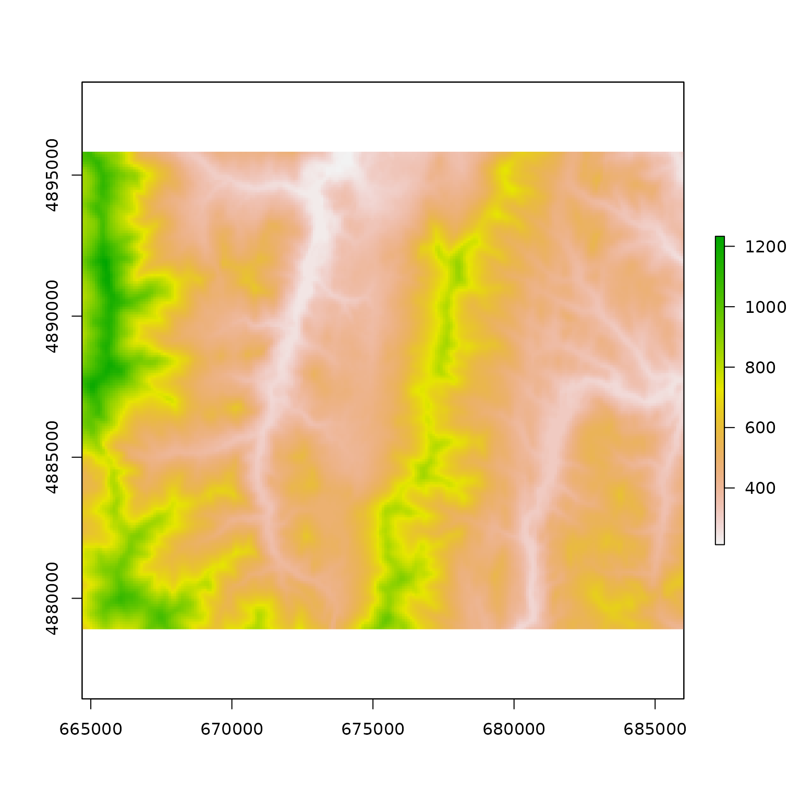
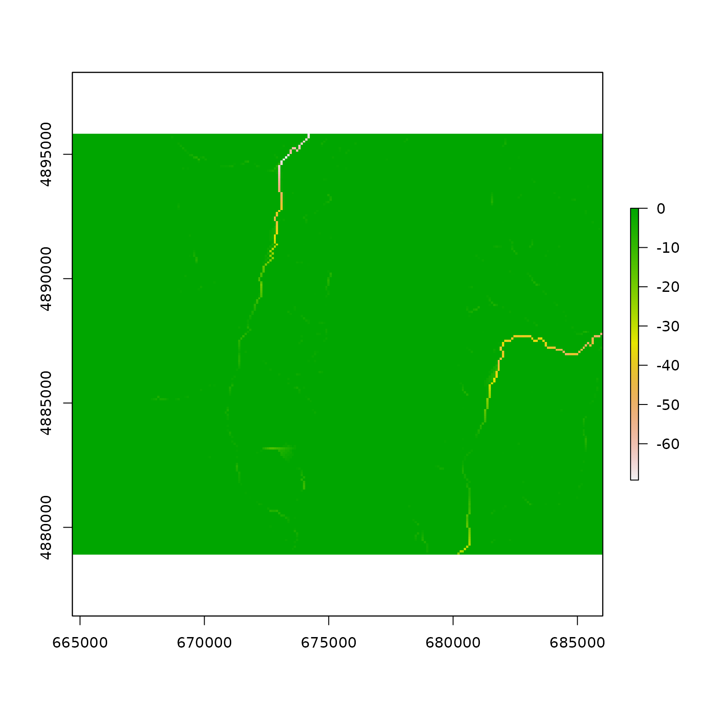
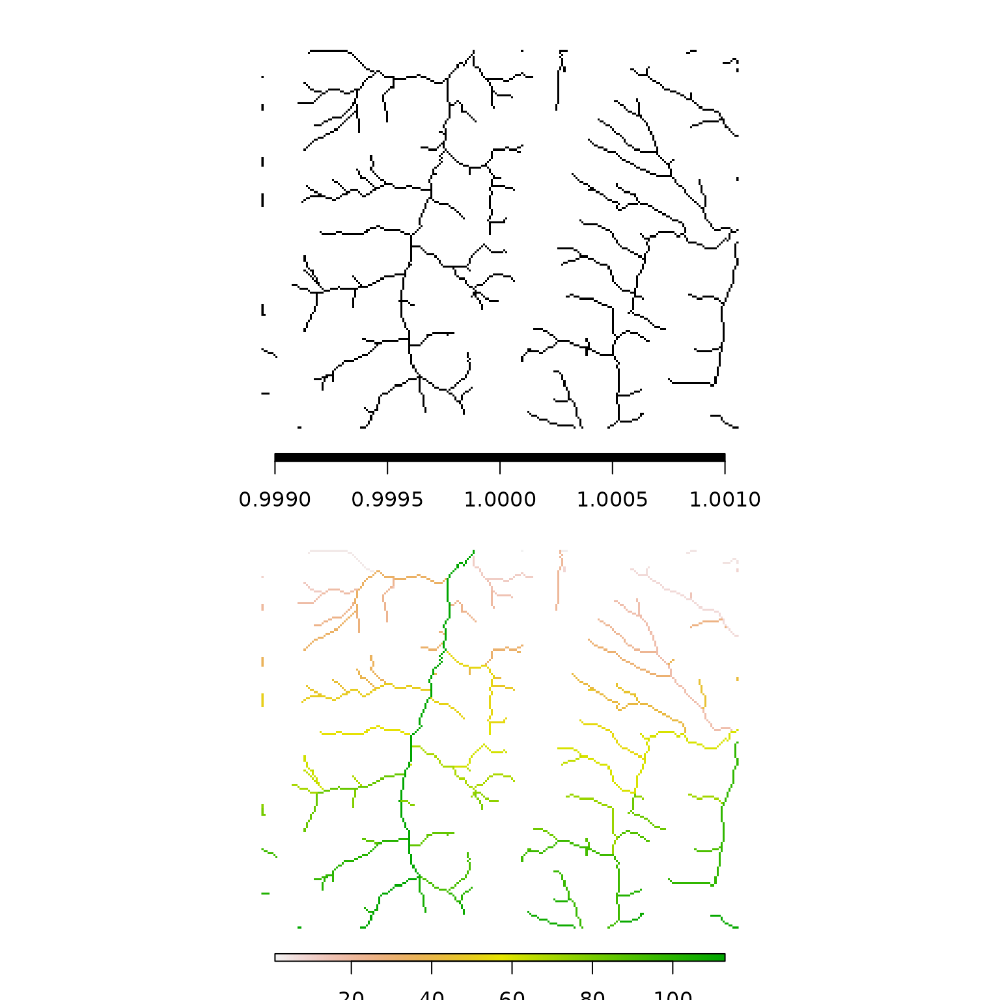

whitebox is an R frontend for the ‘WhiteboxTools’ library, which is an advanced geospatial data analysis platform developed by Prof. John Lindsay at the University of Guelph’s Geomorphometry and Hydrogeomatics Research Group.
‘WhiteboxTools’ can be used to perform common geographical information systems (GIS) analysis operations, such as cost-distance analysis, distance buffering, and raster reclassification. Remote sensing and image processing tasks include image enhancement (e.g. panchromatic sharpening, contrast adjustments), image mosaicing, numerous filtering operations, simple classification (k-means), and common image transformations. ‘WhiteboxTools’ also contains advanced tooling for spatial hydrological analysis (e.g. flow-accumulation, watershed delineation, stream network analysis, sink removal), terrain analysis (e.g. common terrain indices such as slope, curvatures, wetness index, hillshading; hypsometric analysis; multi-scale topographic position analysis), and LiDAR data processing.
WhiteboxTools is not a cartographic or spatial data visualization package; instead it is meant to serve as an analytical backend for other data visualization software, mainly GIS.
This demonstration shows how to use the whitebox package to integrate WhiteboxTools with R.
Suggested citation: Lindsay, J. B. (2016). Whitebox GAT: A case study in geomorphometric analysis. Computers & Geosciences, 95, 75-84. doi:[10.1016/j.cageo.2016.07.003](http://dx.doi.org/10.1016/j.cageo.2016.07.003).
Load the whitebox library.
The current implementation of whitebox generates system() calls to a local WhiteboxTools installation; whitebox_tools or whitebox_tools.exe
wbt_exe_path(shell_quote = FALSE)
#> [1] "/home/andrew/workspace/whitebox-tools/target/release/whitebox_tools"If you do not have WhiteboxTools installed in one of the standard locations, and have not set up your package options, the package will not be able to find your WhiteboxTools installation. Most often you will be able to use whitebox::install_whitebox() to download the latest binaries that correspond to the available version of the R package. However, you have the ability and option to compile yourself and install anywhere. See https://github.com/jblindsay/whitebox-tools for details.
Many R users will be interacting with raster data with one of the many available R packages for spatial data. In this vignette we will use the raster package for visualization.
wbt_init()
wbt_init() is used to set and check the executable path of the binary executable that commands are passed to. These are stored internally as package options. A default value wbt_exe_path(shell_quote = FALSE) is passed when the exe_path argument is left unspecified.
# inspect where wbt_init() will be checking
wbt_exe_path(shell_quote = FALSE)
#> [1] "/home/andrew/workspace/whitebox-tools/target/release/whitebox_tools"
# TRUE when file is found at one of the user specified paths or package default
# FALSE when whitebox_tools does not exist at path
wbt_init()
#> [1] TRUE
# set path manually to whitebox_tools executable, for instance:
wbt_init(exe_path = '/home/andrew/workspace/whitebox-tools/target/release/whitebox_tools')
#> [1] TRUEAny other package options other than exe_path as detailed in ?whitebox::whitebox, can be set with wbt_init(...) or wbt_options().
wbt_verbose()
A helper method for setting the whitebox.verbose option is wbt_verbose(). It allows the user to get and set the package default verbosity level for running tools and other utility methods.
By default, the result of wbt_verbose() is the result of interactive() so tools will print extra console output when you are there to see it, but hide it in your automated tests, markdown documents, vignettes etc.
In this vignette we use wbt_verbose() package option whitebox.verbose is set to TRUE to print out the tool name and elapsed time whenever we run a tool.
# force output when run non-interactively
wbt_verbose(TRUE)When whitebox.verbose is FALSE no output will be printed at all.
This package-level verbose option does not control the verbose_mode argument values passed to individual wbt_* functions that have them at this time. Controlling their output (one line v.s. many) would require a third option to be implemented for this argument such as "all". For now users have control over those arguments to print extra output, and wbt_verbose() has a binary logical result.
Specify input and output paths, and any other options, as specified in package reference:
For instance, here we use the tool “BreachDepressions” to pre-process a Digital Elevation Model (DEM) so we can identify flow pathways.
# sample DEM file path in package extdata folder
input <- system.file("extdata", "DEM.tif", package="whitebox")
# output file name
output <- "./output.tif"
# run breach_depressions tool
wbt_breach_depressions(dem = input, output = output)
#> breach_depressions - Elapsed Time (excluding I/O): 0.8sMore info:?wbt_breach_depressions
These wbt_*_tool_name_*() functions are wrappers around the wbt_run_tool() function that does the system() call given a function-specific argument string.
# sample DEM file path in package extdata folder
input <- system.file("extdata", "DEM.tif", package="whitebox")
# output file name
output <- "./output.tif"
# run breach_depressions tool
wbt_run_tool(tool_name = "BreachDepressions", args = paste0("--dem=", input, " --output=", output))
#> BreachDepressions - Elapsed Time (excluding I/O): 0.9sThe above method of creating wbt_breach_depressions(dem = ..., output = ...) to handle wbt_run_tool("BreachDepressions", args = ...) makes it easy to generate static methods that have parity with the latest WhiteboxTools interface.
raster
We use the raster R package to read the GeoTIFF outputs from WhiteboxTools.
# create raster object from output file
output <- raster(output)
# create raster object from input file
input <- raster(input)
# inspect input
plot(input)
# inspect difference in input v.s. output
plot(output - input)
Here we will take our processing of DEMs a bit further by performing several WhiteboxTools operations in sequence.
We are interested in identifying and ranking tributaries to streams and rivers.
A package that makes use of the whitebox R package is hydroweight.
Here is a brief snippet based on the beginning of the hydroweight README showing how the breached DEM we made above can be used in a spatial hydrological analysis of stream networks.
library(whitebox)
library(raster)
## Import toy_dem from whitebox package
toy_file <- system.file("extdata", "DEM.tif", package = "whitebox")
toy_dem <- raster(x = toy_file, values = TRUE)
crs(toy_dem) <- "EPSG:26918"
## Generate wd as a temporary directory.
## Replace with your own path, or "." for current directory
wd <- tempdir()
## Write toy_dem to working directory
writeRaster(
x = toy_dem, filename = file.path(wd, "toy_dem.tif"),
overwrite = TRUE
)
## Breach depressions to ensure continuous flow
wbt_breach_depressions(
dem = file.path(wd, "toy_dem.tif"),
output = file.path(wd, "toy_dem_breached.tif")
)
#> breach_depressions - Elapsed Time (excluding I/O): 0.31sOnce we have breached the depressions in the DEM, we generate the flow directions.
## Generate d8 flow pointer (note: other flow directions are available)
wbt_d8_pointer(
dem = file.path(wd, "toy_dem_breached.tif"),
output = file.path(wd, "toy_dem_breached_d8.tif")
)
#> d8_pointer - Elapsed Time (excluding I/O): 0.1sThere are several options in WhiteboxTools for the algorithms used for flow pointer (flow direction) and accumulation routines such as FD8, D-infinity, D-infinity
Keyword “Pointer” tools: "D8Pointer", "DInfPointer", "FD8Pointer", "Rho8Pointer"
Keyword “FlowAccumulation” tools: "D8FlowAccumulation", "DInfFlowAccumulation", "FD8FlowAccumulation", "MDInfFlowAccumulation"
Search for more tools involving "flow pointer" by key word: wbt_list_tools(keyword = "flow pointer")
#> All 22 Tools containing keywords:
#> AverageFlowpathSlope: Measures the average slope gradient from each grid cell to all upslope divide cells.
#> AverageUpslopeFlowpathLength: Measures the average length of all upslope flowpaths draining each grid cell.
#> D8FlowAccumulation: Calculates a D8 flow accumulation raster from an input DEM or flow pointer.
#> D8Pointer: Calculates a D8 flow pointer raster from an input DEM.
#> DInfFlowAccumulation: Calculates a D-infinity flow accumulation raster from an input DEM.
#> DInfPointer: Calculates a D-infinity flow pointer (flow direction) raster from an input DEM.
#> DownslopeFlowpathLength: Calculates the downslope flowpath length from each cell to basin outlet.
#> ExtractStreams: Extracts stream grid cells from a flow accumulation raster.
#> FD8FlowAccumulation: Calculates an FD8 flow accumulation raster from an input DEM.
#> FD8Pointer: Calculates an FD8 flow pointer raster from an input DEM.
#> FindNoFlowCells: Finds grid cells with no downslope neighbours.
#> FindParallelFlow: Finds areas of parallel flow in D8 flow direction rasters.
#> FlowAccumulationFullWorkflow: Resolves all of the depressions in a DEM, outputting a breached DEM, an aspect-aligned non-divergent flow pointer, and a flow accumulation raster.
#> FlowLengthDiff: Calculates the local maximum absolute difference in downslope flowpath length, useful in mapping drainage divides and ridges.
#> LongProfileFromPoints: Plots the longitudinal profiles from flow-paths initiating from a set of vector points.
#> LongestFlowpath: Delineates the longest flowpaths for a group of subbasins or watersheds.
#> MDInfFlowAccumulation: Calculates an FD8 flow accumulation raster from an input DEM.
#> MaxUpslopeFlowpathLength: Measures the maximum length of all upslope flowpaths draining each grid cell.
#> NumInflowingNeighbours: Computes the number of inflowing neighbours to each cell in an input DEM based on the D8 algorithm.
#> Rho8Pointer: Calculates a stochastic Rho8 flow pointer raster from an input DEM.
#> SnapPourPoints: Moves outlet points used to specify points of interest in a watershedding operation to the cell with the highest flow accumulation in its neighbourhood.
#> TraceDownslopeFlowpaths: Traces downslope flowpaths from one or more target sites (i.e. seed points).This is just one example of the wealth of tools made available through the WhiteboxTools platform.
Once we calculate the direction of flow by some method, we calculate cumulative flow at all locations
For example with wbt_d8_flow_accumulation():
## Generate d8 flow accumulation in units of cells (note: other flow directions are available)
wbt_d8_flow_accumulation(
input = file.path(wd, "toy_dem_breached.tif"),
output = file.path(wd, "toy_dem_breached_accum.tif"),
out_type = "cells"
)
#> d8_flow_accumulation - Elapsed Time (excluding I/O): 0.3sAnd then we can extract a stream network with wbt_extract_streams() based on a threshold (e.g. 4000) of accumulated flow. This threshold will depend on the choice of flow accumulation algorithm used, local topography, as well as resolution and extent of DEM.
## Generate streams with a stream initiation threshold of 1000 cells
wbt_extract_streams(
flow_accum = file.path(wd, "toy_dem_breached_accum.tif"),
output = file.path(wd, "toy_dem_streams.tif"),
threshold = 100
)
#> extract_streams - Elapsed Time (excluding I/O): 0.2sNow, lets identify tributaries. That is the tool we printed help for up above. This function wbt_tributary_identifier() is a little more complicated because it takes takes two inputs:
Our raster D8 pointer file.
And our raster streams file.
wbt_tributary_identifier(
d8_pntr = file.path(wd, "toy_dem_breached_d8.tif"),
streams = file.path(wd, "toy_dem_streams.tif"),
output = file.path(wd, "toy_dem_tributaries.tif")
)
#> tributary_identifier - Elapsed Time (excluding I/O): 0.0sFinally, we compare results of wbt_extract_streams() with wbt_tributary_identifier()
par(mfrow = c(2, 1), mar = c(2, 2, 2, 2))
plot(raster(file.path(wd, "toy_dem_streams.tif")),
col = "black", axes = FALSE, horizontal = TRUE, box = FALSE)
plot(raster(file.path(wd, "toy_dem_tributaries.tif")),
axes = FALSE, horizontal = TRUE, box = FALSE)
wbt_* utility functionsThese methods provide access to WhiteboxTools executable parameters and metadata.
wbt_help()
wbt_help() prints the WhiteboxTools help: a listing of available commands for executable
wbt_help()
#> WhiteboxTools Help
#>
#> The following commands are recognized:
#> --cd, --wd Changes the working directory; used in conjunction with --run flag.
#> -h, --help Prints help information.
#> -l, --license Prints the whitebox-tools license. Tool names may also be used, --license="Slope"
#> --listtools Lists all available tools. Keywords may also be used, --listtools slope.
#> -r, --run Runs a tool; used in conjunction with --wd flag; -r="LidarInfo".
#> --toolbox Prints the toolbox associated with a tool; --toolbox=Slope.
#> --toolhelp Prints the help associated with a tool; --toolhelp="LidarInfo".
#> --toolparameters Prints the parameters (in json form) for a specific tool; --toolparameters="LidarInfo".
#> -v Verbose mode. Without this flag, tool outputs will not be printed.
#> --viewcode Opens the source code of a tool in a web browser; --viewcode="LidarInfo".
#> --version Prints the version information.
#>
#> Example Usage:
#> >> ./whitebox_tools -r=lidar_info --cd="/path/to/data/" -i=input.las --vlr --geokeyswbt_license()
wbt_license() prints the WhiteboxTools license
wbt_license()
#> WhiteboxTools License
#> Copyright 2017-2020 John Lindsay
#>
#> Permission is hereby granted, free of charge, to any person obtaining a copy of this software and
#> associated documentation files (the "Software"), to deal in the Software without restriction,
#> including without limitation the rights to use, copy, modify, merge, publish, distribute, sublicense,
#> and/or sell copies of the Software, and to permit persons to whom the Software is furnished to do so,
#> subject to the following conditions:
#>
#> The above copyright notice and this permission notice shall be included in all copies or substantial
#> portions of the Software.
#>
#> THE SOFTWARE IS PROVIDED "AS IS", WITHOUT WARRANTY OF ANY KIND, EXPRESS OR IMPLIED, INCLUDING BUT
#> NOT LIMITED TO THE WARRANTIES OF MERCHANTABILITY, FITNESS FOR A PARTICULAR PURPOSE AND
#> NONINFRINGEMENT. IN NO EVENT SHALL THE AUTHORS OR COPYRIGHT HOLDERS BE LIABLE FOR ANY CLAIM, DAMAGES
#> OR OTHER LIABILITY, WHETHER IN AN ACTION OF CONTRACT, TORT OR OTHERWISE, ARISING FROM, OUT OF OR IN
#> CONNECTION WITH THE SOFTWARE OR THE USE OR OTHER DEALINGS IN THE SOFTWARE.wbt_version()
Prints the WhiteboxTools version
wbt_version()
#> WhiteboxTools v1.5.0 by Dr. John B. Lindsay (c) 2017-2021
#>
#> WhiteboxTools is an advanced geospatial data analysis platform developed at
#> the University of Guelph's Geomorphometry and Hydrogeomatics Research
#> Group (GHRG). See www.whiteboxgeo.com for more details.wbt_list_tools()
Use wbt_list_tools() to list all available tools in WhiteboxTools. In v1.5.0 this is 448 tools!
The full list can be an overwhelming amount of output, so you pass the keyword argument to search and filter.
For example we list tools with keyword ‘flowaccumulation’ in tool name or description.
wbt_list_tools(keywords = "flowaccumulation")
#> All 5 Tools containing keywords:
#> D8FlowAccumulation: Calculates a D8 flow accumulation raster from an input DEM or flow pointer.
#> DInfFlowAccumulation: Calculates a D-infinity flow accumulation raster from an input DEM.
#> FD8FlowAccumulation: Calculates an FD8 flow accumulation raster from an input DEM.
#> FlowAccumulationFullWorkflow: Resolves all of the depressions in a DEM, outputting a breached DEM, an aspect-aligned non-divergent flow pointer, and a flow accumulation raster.
#> MDInfFlowAccumulation: Calculates an FD8 flow accumulation raster from an input DEM.wbt_tool_help()
Once we find a tool that we are interested in using, we can investigate what sort of parameters it takes. The R methods generally take the same named parameters.
R functions have the naming scheme wbt_tool_name where _ is used for spaces, whereas the tools themselves have no spaces.
Prints the help for a specific tool using the command line.
wbt_tool_help("tributaryidentifier")
#> TributaryIdentifier
#> Description:
#> Assigns a unique identifier to each tributary in a stream network.
#> Toolbox: Stream Network Analysis
#> Parameters:
#>
#> Flag Description
#> ----------------- -----------
#> --d8_pntr Input raster D8 pointer file.
#> --streams Input raster streams file.
#> -o, --output Output raster file.
#> --esri_pntr D8 pointer uses the ESRI style scheme.
#> --zero_background Flag indicating whether a background value of zero should be used.
#>
#>
#> Example usage:
#> >>./homeandrewworkspacewhitebox-toolstargetreleasewhitebox_tools -r=TributaryIdentifier -v --wd="/path/to/data/" --d8_pntr=D8.tif --streams=streams.tif -o=output.tif
#> >>./homeandrewworkspacewhitebox-toolstargetreleasewhitebox_tools -r=TributaryIdentifier -v --wd="/path/to/data/" --d8_pntr=D8.tif --streams=streams.tif -o=output.tif --esri_pntr --zero_backgroundPrints the R function help, which is derived from the help page and other metadata.
?wbt_tributary_identifierwbt_toolbox()
Another way that tools are organized in WhiteboxTools is by “toolbox.”
wbt_toolbox() prints the toolbox for a specific tool (or all tools if none specified)
wbt_toolbox(tool_name = "aspect")
#> Geomorphometric AnalysisPrint the full list by not specifying tool_name
wbt_tool_parameters()
wbt_tool_parameters() retrieves the tool parameter descriptions for a specific tool as JSON formatted string.
wbt_tool_parameters("slope")
#> {"parameters": [{"name":"Input DEM File","flags":["-i","--dem"],"description":"Input raster DEM file.","parameter_type":{"ExistingFile":"Raster"},"default_value":null,"optional":false},{"name":"Output File","flags":["-o","--output"],"description":"Output raster file.","parameter_type":{"NewFile":"Raster"},"default_value":null,"optional":false},{"name":"Z Conversion Factor","flags":["--zfactor"],"description":"Optional multiplier for when the vertical and horizontal units are not the same.","parameter_type":"Float","default_value":null,"optional":true},{"name":"Units","flags":["--units"],"description":"Units of output raster; options include 'degrees', 'radians', 'percent'","parameter_type":{"OptionList":["degrees","radians","percent"]},"default_value":"degrees","optional":true}]}wbt_view_code()
WhiteboxTools is written in Rust and is open source. You can view the source code for a specific tool on the source code repository.
wbt_view_code("breach_depressions")
#> https://github.com/jblindsay/whitebox-tools/blob/master/whitebox-tools-app/src/tools/hydro_analysis/breach_depressions.rsUse the argument viewer=TRUE to use browseURL() to open a browser window to the corresponding GitHub page.